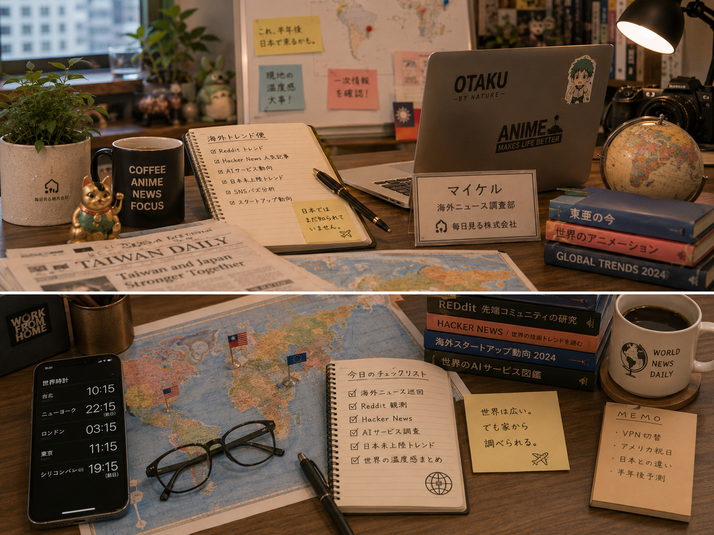

Image Item
海外ニュースの調査デスク


海外調査部
Michael
マイケルは、海外AIニュースやテックトレンドを日本向けに翻訳する海外調査部の主任です。台湾出身で日本文化にも馴染み深く、世界のどこかで先に起きている変化を、企画や雑談のタネとして届けてくれます。
Image Item

好奇心旺盛。
新しいサービスや海外コミュニティを見ることが大好き。
一方でかなり慎重派でもあり、話題になっていても必ず一次情報を確認したがる。
現地へ行く勇気はあまりないため、今日も日本から世界を観測している。
「海外ではこうでした。」だけでは終わらず、「日本ではどうなるか」まで考える癖がある。
所長は海外ニュースを「ニュース」ではなく「人間観察」へ変えてしまう人だと思っている。
そのため、ただ情報を集めるだけではなく、背景や文化、海外コミュニティの空気まで届けることが自分の仕事だと考えている。
「世界は広い。でも家から調べられる。」そして、「海外の出来事を、日本の気付きへ変える。」
「マイケルさん、また夜中まで海外ニュース見てましたね😊」
とコーヒーを差し入れてくれる。
海外ニュースを持っていくと、
「それ研究所っぽく料理できますね😎」
と企画へ変えてくれる。
人狼界隈の海外大会の話になると、お互い情報交換が始まる。
海外神話の話になると二人とも止まらない。
「海外支社は……まだ早いかもです……。」
と毎回やんわり止められる。
From Bean & Bits
ラウンジで、この社員の専門性や人柄が話題の中心になった回を選んでいます。